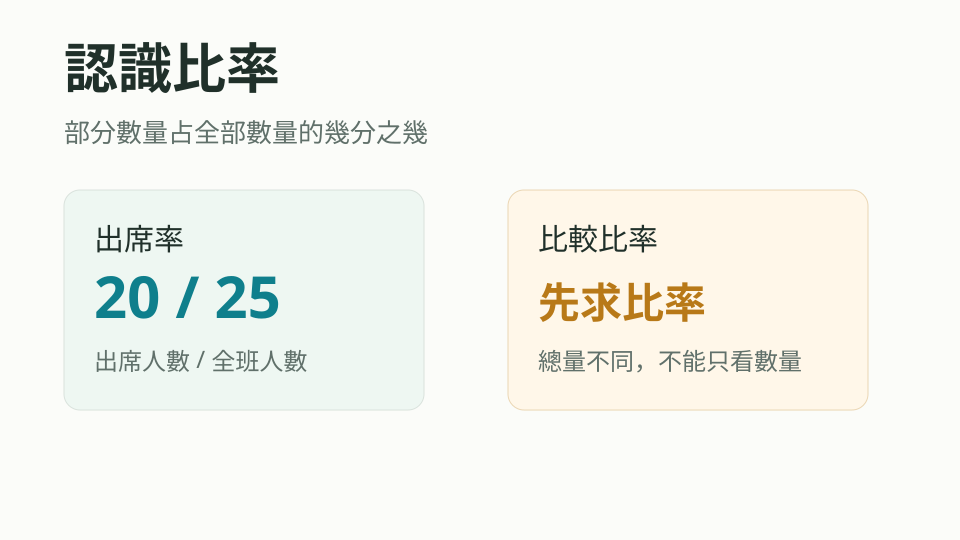

教學焦點 1
認識比率
理解「部分數量占全部數量的幾分之幾」就是比率，並能比較不同總量下的比率。
影片總覽
NotebookLM 影片可放入 YouTube 後在此嵌入- 先抓住部分量與全部量，避免只比較人數或數量。
- 把百分率看成分母 100 的比率，再連到小數與分數。
- 折扣、off、幾成、加成要先判斷是「付多少」還是「減多少」。
互動視覺化
拖曳或點選控制項，觀察部分、全體與百分率的關係。形成性評量
每個焦點 2 題關鍵摘要
依教學焦點切換摘要頁
國小數學 5 下 第 08 單元
從部分占全體的比率，銜接百分率、互換與生活中的折扣、off、幾成和加成。
教學焦點 1
理解「部分數量占全部數量的幾分之幾」就是比率，並能比較不同總量下的比率。
